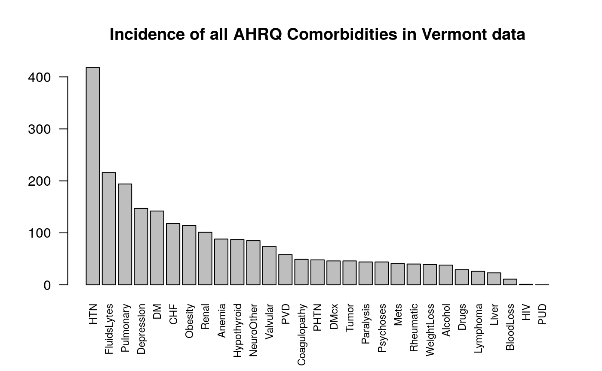

Quick Start
library(icd) head(uranium_pathology, 10) #> case icd10 #> 1 1 F17.9 #> 2 1 I21.9 #> 3 1 K75.9 #> 4 1 R55 #> 5 2 I25.1 #> 6 2 I35.8 #> 7 2 I63.9 #> 8 2 I64 #> 9 2 J43.9 #> 10 2 J84.1 head(comorbid_charlson(uranium_pathology)) #> MI CHF PVD Stroke Dementia Pulmonary Rheumatic PUD LiverMild DM #> 1 TRUE FALSE FALSE FALSE FALSE FALSE FALSE FALSE FALSE FALSE #> 2 FALSE FALSE FALSE TRUE FALSE TRUE FALSE FALSE FALSE FALSE #> 3 TRUE FALSE FALSE FALSE FALSE FALSE FALSE FALSE FALSE FALSE #> 4 FALSE FALSE FALSE FALSE FALSE FALSE FALSE FALSE FALSE FALSE #> 5 FALSE FALSE FALSE FALSE FALSE FALSE FALSE FALSE FALSE FALSE #> 6 TRUE FALSE TRUE FALSE FALSE TRUE FALSE FALSE FALSE FALSE #> DMcx Paralysis Renal Cancer LiverSevere Mets HIV #> 1 FALSE FALSE FALSE FALSE FALSE FALSE FALSE #> 2 FALSE FALSE FALSE FALSE FALSE FALSE FALSE #> 3 FALSE FALSE FALSE FALSE FALSE FALSE FALSE #> 4 FALSE FALSE FALSE FALSE FALSE FALSE FALSE #> 5 FALSE FALSE FALSE FALSE FALSE TRUE FALSE #> 6 FALSE FALSE FALSE FALSE FALSE FALSE FALSE comorbid_charlson(uranium_pathology, return_df = TRUE, return_binary = TRUE)[1:5, 1:5] #> case MI CHF PVD Stroke #> 1 1 1 0 0 0 #> 2 2 0 0 0 1 #> 3 3 1 0 0 0 #> 4 4 0 0 0 0 #> 5 5 0 0 0 0 hist(charlson(uranium_pathology), main = "Uranium data", xlab = "Charlson Score")

Introduction
Calculate comorbidities, medical risk scores, and work very quickly and precisely with ICD-9 and ICD-10 codes. This package enables a work flow from raw tables of ICD codes in hospital databases to comorbidities. ICD-9 and ICD-10 comorbidity mappings from Quan (Deyo and Elixhauser versions), Elixhauser and AHRQ included. Common ambiguities and code formats are handled. Comorbidity computation includes Hierarchical Condition Codes, and an implementation of AHRQ Clinical Classifications. Risk scores include those of Charlson and van Walraven. US Clinical Modification, Word Health Organization, Belgian and French ICD-10 codes are supported, most of which are downloaded on demand.
This package is what you need to generate data for ‘Table 1’ of your prospective or retrospective study.
When calculating which patients have which comorbidities, the data are typically structured in long (one column of diagnostic codes, multiple codes per patient) or wide (multiple diagnostic code columns, one row per patient) formats – ‘icd’ comorbidity calculation handles either transparently.
# long format ICD-9-CM codes, with present-on-arrival flags patients_icd9 #> visit_id icd9 poa #> 1 1000 40201 Y #> 2 1000 2258 <NA> #> 3 1000 7208 N #> 4 1000 25001 Y #> 5 1001 34400 X #> 6 1001 4011 Y #> 7 1002 4011 E # long format ICD-10 codes, real mortality data uranium_pathology[1:5, ] #> case icd10 #> 1 1 F17.9 #> 2 1 I21.9 #> 3 1 K75.9 #> 4 1 R55 #> 5 2 I25.1 # wide format, real ICD-9 discharge diagnoses vermont_dx[1:5, c(1, 6:15)] #> visit_id DX1 DX2 DX3 DX4 DX5 DX6 DX7 DX8 DX9 DX10 #> 1 7 27801 03842 51881 41519 99591 42842 5849 5609 6826 5853 #> 2 10 71526 25000 42830 4280 4019 4241 311 49390 2724 73300 #> 3 13 71535 59651 78052 27800 V8537 311 4019 53081 56400 #> 4 16 71535 49390 53081 27800 V140 V141 V142 V160 V8538 #> 5 37 71536 4241 2859 2720 4414 53081 V5866
In real life, there are often problems with the data, such as NA values, out-of-order visit_ids, non-existent or invalid ICD codes, etc.. Although standard R tools or the tidyverse can be used to clean the data, knowing the specific validation rules for ICD-9 and ICD-10 codes, as well as the standardized structure of healthcare data enables faster and more accurate data cleaning.
# use AHRQ revision of Elixhauser comorbidities, show only first eight columns comorbid_ahrq(patients_icd9)[, 1:8] #> CHF Valvular PHTN PVD HTN Paralysis NeuroOther Pulmonary #> 1000 TRUE FALSE FALSE FALSE TRUE FALSE FALSE FALSE #> 1001 FALSE FALSE FALSE FALSE TRUE TRUE FALSE FALSE #> 1002 FALSE FALSE FALSE FALSE TRUE FALSE FALSE FALSE # use Elixhauser (Quan revision) comorbidities, show first few results comorbid_quan_elix(vermont_dx)[1:5, 1:8] #> CHF Arrhythmia Valvular PHTN PVD HTN Paralysis NeuroOther #> 7 TRUE TRUE FALSE TRUE FALSE FALSE FALSE FALSE #> 10 TRUE FALSE TRUE FALSE FALSE TRUE FALSE FALSE #> 13 FALSE FALSE FALSE FALSE FALSE TRUE FALSE FALSE #> 16 FALSE FALSE FALSE FALSE FALSE FALSE FALSE FALSE #> 37 FALSE FALSE TRUE FALSE TRUE FALSE FALSE FALSE
Things work beautifully using magrittr %>% to chain functions together. magrittr is useful for chains of commands, such as the following:
# find Elixhauser comorbidities which were present-on-arrival patients_icd9 %>% filter_poa %>% comorbid_elix #> CHF Arrhythmia Valvular PHTN PVD HTN Paralysis NeuroOther Pulmonary #> 1000 FALSE FALSE FALSE FALSE FALSE FALSE FALSE FALSE FALSE #> 1001 FALSE FALSE FALSE FALSE FALSE TRUE FALSE FALSE FALSE #> DM DMcx Hypothyroid Renal Liver PUD HIV Lymphoma Mets Tumor #> 1000 TRUE FALSE FALSE FALSE FALSE FALSE FALSE FALSE FALSE FALSE #> 1001 FALSE FALSE FALSE FALSE FALSE FALSE FALSE FALSE FALSE FALSE #> Rheumatic Coagulopathy Obesity WeightLoss FluidsLytes BloodLoss Anemia #> 1000 FALSE FALSE FALSE FALSE FALSE FALSE FALSE #> 1001 FALSE FALSE FALSE FALSE FALSE FALSE FALSE #> Alcohol Drugs Psychoses Depression #> 1000 FALSE FALSE FALSE FALSE #> 1001 FALSE FALSE FALSE FALSE # same as above, then summarize: patients_icd9 %>% filter_poa %>% comorbid_elix %>% colSums #> CHF Arrhythmia Valvular PHTN PVD HTN #> 0 0 0 0 0 1 #> Paralysis NeuroOther Pulmonary DM DMcx Hypothyroid #> 0 0 0 1 0 0 #> Renal Liver PUD HIV Lymphoma Mets #> 0 0 0 0 0 0 #> Tumor Rheumatic Coagulopathy Obesity WeightLoss FluidsLytes #> 0 0 0 0 0 0 #> BloodLoss Anemia Alcohol Drugs Psychoses Depression #> 0 0 0 0 0 0 # Take Vermont discharge data (wide to long conversion no longer needed) # find comorbidities, convert TRUE to 1 and show first few vermont_cmb <- vermont_dx %>% icd9_comorbid_quan_elix %>% apply(2, as.integer) # convert logical to integer head(vermont_cmb) #> CHF Arrhythmia Valvular PHTN PVD HTN Paralysis NeuroOther Pulmonary DM #> [1,] 1 1 0 1 0 0 0 0 0 0 #> [2,] 1 0 1 0 0 1 0 0 1 1 #> [3,] 0 0 0 0 0 1 0 0 0 0 #> [4,] 0 0 0 0 0 0 0 0 1 0 #> [5,] 0 0 1 0 1 0 0 0 0 0 #> [6,] 0 0 0 0 0 0 0 0 0 0 #> DMcx Hypothyroid Renal Liver PUD HIV Lymphoma Mets Tumor Rheumatic #> [1,] 0 0 1 0 0 0 0 0 1 0 #> [2,] 0 0 0 0 0 0 0 0 0 0 #> [3,] 0 0 0 0 0 0 0 0 0 0 #> [4,] 0 0 0 0 0 0 0 0 0 0 #> [5,] 0 0 0 0 0 0 0 0 0 0 #> [6,] 0 0 0 0 0 0 0 0 0 0 #> Coagulopathy Obesity WeightLoss FluidsLytes BloodLoss Anemia Alcohol Drugs #> [1,] 0 1 0 1 0 0 0 0 #> [2,] 0 0 0 0 0 0 0 0 #> [3,] 0 1 0 0 0 0 0 0 #> [4,] 0 1 0 0 0 0 0 0 #> [5,] 0 0 0 0 0 0 0 0 #> [6,] 0 0 0 0 0 0 0 0 #> Psychoses Depression #> [1,] 0 0 #> [2,] 0 1 #> [3,] 0 1 #> [4,] 0 0 #> [5,] 0 0 #> [6,] 0 0 barplot(colSums(vermont_cmb[, 1:5]), main = "Incidence of five Elixhauser comorbidities in Vermont data")

# Use built-in summary plot, this time for AHRQ comorbidities plot_comorbid(vermont_dx, comorbid_fun = comorbid_ahrq, main = "Incidence of all AHRQ Comorbidities in Vermont data")

The above can also be written in classic R with many parentheses:
head(apply(icd9_comorbid_quan_deyo(vermont_dx), 2, as.integer))
Specifying data types
icd will guess the type and form of input data when possible, but there are sometimes ambiguities when ICD-9 and ICD-10 codes are mixed.
is_valid("100") # valid ICD-9 code #> [1] TRUE is_valid("A1001") # valid ICD-10 code #> [1] TRUE is_valid(c("100", "A1001")) # they can't both be valid #> [1] TRUE FALSE
You can let icd guess types, or specify the type of your data explicitly:
# decimal format ICD-10 codes codes <- c("A10.01", "L40.50", "Z77.098") # set class to be icd10cm (and implicitly icd10) as.icd10cm(codes) #> [1] "A10.01" "L40.50" "Z77.098" # indicate decimal code and icd10 (not necessarily icd10cm) codes %>% as.decimal_diag %>% as.icd10 #> [1] "A10.01" "L40.50" "Z77.098"
Doing this avoids mistakes in guessing type. For example code V10 is valid in both ICD-9 and ICD-10.
Converting ICD codes between types
ICD codes are usually presented in decimal format (beware, for this is not a number), e.g., the ICD-9 code 003.21, or ICD-10 code T81.10XD, whereas most electronic records seem to use the short form without a decimal place. These are not interchangeable simply by removing the decimal place, and great care is taken to do this correctly. Most ICD-9 codes do not have a letter prefix, so there is possible ambiguity here. icd was designed to deal with the common problem of incorrectly formatted ICD codes. The assumption is made that short codes of three or fewer characters are describing only the ‘major’ part: there is no other reasonable interpretation. For example, 020 must be taken to mean 20, not 2.0 or even 0.20. In most cases, when icd works on ICD-9 codes, it will convert any codes of fewer than three characters into zero-padded three-digit codes.
decimal_to_short(c("1", "10.20", "100", "123.45")) #> [1] "001" "01020" "100" "12345" short_to_decimal(c("1", "22", "2244", "1005")) #> [1] "001" "022" "224.4" "100.5" # similar operations with magrittr, also showing invalid codes codes <- as.icd9(c("87.65", "9999", "Aesop", -100, "", NA)) decimal_to_short(codes) #> [1] "08765" "" "" "" "" NA # ICD-10 decimal_to_short("T81.10XD") #> [1] "T8110XD"
Validation of ICD-9 codes
# guess both ICD version (9, but could be 10?), and decimal vs short form is_valid("V10.2") #> [1] TRUE # state we are using short or decimal codes: is_valid(c("099.17", "-1"), short_code = TRUE) #> [1] FALSE FALSE is_valid(c("099.17", "-1.1"), short_code = FALSE) #> [1] TRUE FALSE is_valid(c("1", "001", "100", "123456", "003.21"), short_code = TRUE) #> [1] TRUE TRUE TRUE FALSE FALSE
Decoding ICD-9 codes to descriptions
There are various ways of extracting the description of the condition described by an ICD-9 code. the explain group of functions return a data frame with a column for the ICD-9 code, a column for the full length Diagnosis, and a column for the short Description.
explain_code("1.0") # 'decimal' format code inferred #> [1] "Cholera due to vibrio cholerae" explain_code("0019") # 'short' format code inferred #> [1] "Cholera, unspecified"
# we can be explicit about short vs decimal explain_code("434.00", short_code = FALSE) #> [1] "Cerebral thrombosis without mention of cerebral infarction" explain_code(c("43410", "43491"), short_code = TRUE) #> [1] "Cerebral embolism without mention of cerebral infarction" #> [2] "Cerebral artery occlusion, unspecified with cerebral infarction" #explain top level code with children "391" %>% explain_code # single three-digit code #> [1] "Rheumatic fever with heart involvement" "391" %>% children # let's see the child codes #> [1] "391" "3910" "3911" "3912" "3918" "3919" "391" %>% children %>% explain_code # children condensed to parent code #> [1] "Rheumatic fever with heart involvement" "391" %>% children %>% explain_code(condense = FALSE) # prevent condense #> [1] "Rheumatic fever with heart involvement" #> [2] "Acute rheumatic pericarditis" #> [3] "Acute rheumatic endocarditis" #> [4] "Acute rheumatic myocarditis" #> [5] "Other acute rheumatic heart disease" #> [6] "Acute rheumatic heart disease, unspecified"
Arbitrary named list(s) of codes:
explain_code(list(somecodes = as.icd9(c("001", "391")), morecodes = as.icd9cm(c("001.1", "001.9")))) #> $somecodes #> [1] "Cholera" #> [2] "Rheumatic fever with heart involvement" #> #> $morecodes #> [1] "Cholera due to vibrio cholerae el tor" #> [2] "Cholera, unspecified"
001 (Cholera) isn’t itself a diagnostic code, i.e. leaf node in the hierarchy, but 390 (Rheumatic fever without heart involvement) is. Both are explained correctly:
explain_code(list(cholera = "001", rheumatic_heart = "390")) #> $cholera #> [1] "Cholera" #> #> $rheumatic_heart #> [1] "Rheumatic fever without mention of heart involvement"
Now try to explain on a non-existent (but ‘valid’) ICD-9 code:
s <- explain_code("001.5") # gives warning
As we have just seen, explain_code can convert lists of ICD-9 or ICD-10 codes to a human-readable format. Let’s apply the explain_code to a list of comorbidity ICD-9 codes in one of the commonly-used mappings. This makes comprehending a complicated list much easier. Taking the list for dementia:
length(icd9_map_quan_deyo[["Dementia"]]) # 133 possible ICD-9 codes #> [1] 133 length(icd10_map_quan_deyo[["Dementia"]]) # the ICD-10 map is different #> [1] 20 # explain_code summarizes these to just two groups: icd9_map_quan_deyo[["Dementia"]] %>% explain_code(warn = FALSE) #> [1] "Dementias" #> [2] "Dementia in conditions classified elsewhere" #> [3] "Senile degeneration of brain" # contrast with: icd9_map_quan_deyo[["Dementia"]] %>% explain_code(condense = TRUE, warn = FALSE) #> [1] "Dementias" #> [2] "Dementia in conditions classified elsewhere" #> [3] "Senile degeneration of brain"
Use a range with more than two hundred ICD-9 codes (most of them not real):
length("390" %i9da% "392.1") #> [1] 244 "390" %i9da% "392.1" %>% explain_code(warn = FALSE) #> [1] "Rheumatic fever without mention of heart involvement" #> [2] "Rheumatic fever with heart involvement" #> [3] "Rheumatic chorea with heart involvement"
The warnings here are irrelevant because we know that `%i9da% produces codes which do not correspond to diagnoses. However, in other usage, the user would typically expect the ICD-9 codes he or she is using to be diagnostic, hence the default to warn.
Filtering by Present-on-Arrival
This flag is recorded with each ICD-9 code, indicating whether that diagnosis was present on admission. With some caution, codes flagged specifically not POA can be treated as new diseases during an admission.
Present-on-arrival (POA) is typically a factor, or vector of values such as “Y”, “N”, “X”, “E”, or NA. Intermediate codes, such as “exempt”, “unknown” and NA mean that “yes” is not the same as “not no.” This requires four functions to cover the possibilities stored in `poa_choices:
#> [1] "yes" "no" "notYes" "notNo"Filter for present-on-arrival being “Y”
patients_icd9 %>% filter_poa_yes #> visit_id icd9 #> 1 1000 40201 #> 4 1000 25001 #> 6 1001 4011
Show that yes is not equal to not no (e.g. due to NA in poa field)
patients_icd9 %>% filter_poa_not_no #> visit_id icd9 #> 1 1000 40201 #> 2 1000 2258 #> 4 1000 25001 #> 5 1001 34400 #> 6 1001 4011 #> 7 1002 4011
Comorbidities
The comorbidities from different sources are provided as lists. At present only the most recent mapping of ICD-9 codes to comorbidities is provided. See these github issues.
This package contains ICD-9-CM to comorbidity mappings from several sources, based on either the Charlson or Elixhauser lists of comorbidities. Updated versions of these lists from AHRQ and Quan et al are included, along with the original Elixhauser mapping . Since some data is provided in SAS source code format, this package has internal functions to parse this SAS source code and generate R data structures. This processing is limited to what is needed for this purpose, although may be generalizable and useful in other contexts. Other lists are transcribed directly from the published articles, but interpretation of SAS code used for the original publications is preferable.
AHRQ comorbidity classification
The AHRQ keeps an updated version of the Elixhauser classification of ICD-9-CM codes into comorbidities, useful for research. They provide the data in the form of SAS code (Healthcare Research and Quality 2018). The names of the comorbidities derived from ICD-9 and ICD-10 codes are the same. Maps contain the ICD code to comorbidity mappings; the functions that apply those mappings are called things like icd10_comorbid_ahrq.
names(icd9_map_ahrq) #> [1] "CHF" "Valvular" "PHTN" "PVD" "HTN" #> [6] "HTNcx" "Paralysis" "NeuroOther" "Pulmonary" "DM" #> [11] "DMcx" "Hypothyroid" "Renal" "Liver" "PUD" #> [16] "HIV" "Lymphoma" "Mets" "Tumor" "Rheumatic" #> [21] "Coagulopathy" "Obesity" "WeightLoss" "FluidsLytes" "BloodLoss" #> [26] "Anemia" "Alcohol" "Drugs" "Psychoses" "Depression" icd9_map_ahrq$CHF[1:5] #> [1] "39891" "40201" "40211" "40291" "40401" icd10_map_ahrq$CHF[1:5] #> [1] "I0981" "I501" "I5020" "I5021" "I5022"
Elixhauser comorbidities
Elixhauser originally developed this set of comorbidities to predict long term mortality based on hospital ICD-9-CM coding records (Elixhauser et al. 1998). The AHRQ comorbidities are an updated version of this, however the original Elixhauser have been used in many publications.
# the names of the comorbidities in each map are available as named lists: names_elix[1:5] #> $`01` #> [1] "Congestive heart failure" #> #> $`02` #> [1] "Cardiac arrhythmias" #> #> $`03` #> [1] "Valvular disease" #> #> $`04` #> [1] "Pulmonary circulation disorders" #> #> $`05` #> [1] "Peripheral vascular disorders" unlist(unname(names_elix)) #> [1] "Congestive heart failure" #> [2] "Cardiac arrhythmias" #> [3] "Valvular disease" #> [4] "Pulmonary circulation disorders" #> [5] "Peripheral vascular disorders" #> [6] "Hypertension, combined" #> [7] "Paralysis" #> [8] "Other neurological disorders" #> [9] "Chronic pulmonary disease" #> [10] "Diabetes, uncomplicated" #> [11] "Diabetes, complicated" #> [12] "Hypothyroidism" #> [13] "Renal failure" #> [14] "Liver disease" #> [15] "Peptic ulcer disease excluding bleeding" #> [16] "HIV/AIDS" #> [17] "Lymphoma" #> [18] "Metastatic cancer" #> [19] "Solid tumor without metastasis" #> [20] "Rheumatoid arthritis/collagen vascular diseases" #> [21] "Coagulopathy" #> [22] "Obesity" #> [23] "Weight loss" #> [24] "Fluid and electrolye disorders" #> [25] "Blood loss anemia" #> [26] "Deficiency anemias" #> [27] "Alcohol abuse" #> [28] "Drug abuse" #> [29] "Psychoses" #> [30] "Depression" # The map contents have ICD codes with the class set icd9_map_elix$HTNcx #> [1] "40210" "40290" "40410" "40490" "40511" "40519" "40591" "40599" icd10_map_elix$HTNcx #> [1] "I11" "I110" "I119" "I12" "I120" "I129" "I13" "I130" "I131" #> [10] "I1310" "I1311" "I132" "I15" "I150" "I151" "I152" "I158" "I159"
Quan
In a classic paper, Quan (Quan et al. 2011) paper looked at indices using both ICD-10 and ICD-9-CM. Quan generated updated ICD-9-CM codes for all 30 of Elixhauser and all 17 of Charlson/Deyo’s comorbidities. Thus there are two ‘Quan’ comorbidity mappings.
names(icd10_map_quan_deyo) #> [1] "MI" "CHF" "PVD" "Stroke" "Dementia" #> [6] "Pulmonary" "Rheumatic" "PUD" "LiverMild" "DM" #> [11] "DMcx" "Paralysis" "Renal" "Cancer" "LiverSevere" #> [16] "Mets" "HIV" names(icd10_map_quan_elix) #> [1] "CHF" "Arrhythmia" "Valvular" "PHTN" "PVD" #> [6] "HTN" "HTNcx" "Paralysis" "NeuroOther" "Pulmonary" #> [11] "DM" "DMcx" "Hypothyroid" "Renal" "Liver" #> [16] "PUD" "HIV" "Lymphoma" "Mets" "Tumor" #> [21] "Rheumatic" "Coagulopathy" "Obesity" "WeightLoss" "FluidsLytes" #> [26] "BloodLoss" "Anemia" "Alcohol" "Drugs" "Psychoses" #> [31] "Depression"
Examples
Filter patients and create comorbidities
Take my patients, find the ones where there definitely or maybe was a diagnosis present on admission, then generate comorbidities based on the AHRQ mapping. N.b. NotNo is not the same as Yes because of some exempt, unclassifiable conditions, or NA values for the present-on-admission flag.
patients_icd9 %>% filter_poa_not_no %>% icd9_comorbid_ahrq %>% extract(1:9) #> [1] TRUE FALSE FALSE FALSE FALSE FALSE FALSE FALSE FALSE
Compare two comorbidity definitions
We will find the differences between some categories of the original Elixhauser and the updated version by Quan. Just taking the select few comorbidity groups for brevity:
difference <- diff_comorbid(icd9_map_elix, icd9_map_quan_elix, all_names = c("CHF", "PHTN", "HTN", "Valvular")) #> Comorbidity CHF: #> icd9_map_quan_elix has 70 codes not in icd9_map_elix. First few are: 'Mal hypert hrt dis w hf' 'Mal hyp ht/kd I-IV w hf' 'Mal hyp ht/kd stg V w hf' 'Prim cardiomyopathy NEC' 'Alcoholic cardiomyopathy' #> Comorbidity PHTN: #> icd9_map_quan_elix has 45 codes not in icd9_map_elix. First few are: 'Acute pulmonary heart disease' 'Chronic pulmonary heart disease' 'Arterioven fistu pul ves' 'Pulmon circulat dis NEC' #> Comorbidity HTN: #> icd9_map_quan_elix has 89 codes not in icd9_map_elix. First few are: 'Essential hypertension' #> Comorbidity Valvular: #> icd9_map_quan_elix has 106 codes not in icd9_map_elix. First few are: 'Syphilitic endocarditis' 'Diseases of mitral valve' 'Diseases of other endocardial structures' 'Other diseases of endocardium' # reuslts also returned as data str(difference) #> List of 4 #> $ CHF :List of 3 #> ..$ both : chr [1:117] "39891" "40211" "40291" "40411" ... #> ..$ only.x: chr(0) #> ..$ only.y: chr [1:70] "40201" "40401" "40403" "4254" ... #> $ PHTN :List of 3 #> ..$ both : chr [1:121] "4160" "41600" "41601" "41602" ... #> ..$ only.x: chr(0) #> ..$ only.y: chr [1:45] "4150" "41500" "41501" "41502" ... #> $ HTN :List of 3 #> ..$ both : chr [1:22] "4011" "40110" "40111" "40112" ... #> ..$ only.x: chr(0) #> ..$ only.y: chr [1:89] "401" "4010" "40100" "40101" ... #> $ Valvular:List of 3 #> ..$ both : chr [1:526] "09320" "09321" "09322" "09323" ... #> ..$ only.x: chr(0) #> ..$ only.y: chr [1:106] "0932" "09325" "09326" "09327" ...
Which pulmonary hypertension codes are only in Quan’s version?
difference$PHTN$only.y %>% get_defined %>% explain_code #> [1] "Acute pulmonary heart disease" #> [2] "Chronic pulmonary heart disease" #> [3] "Arteriovenous fistula of pulmonary vessels" #> [4] "Other specified diseases of pulmonary circulation"
(Passing through get_defined stops explain_code complaining that some of the input codes don’t exist. This is because the comorbidity mappings have every possible numerical ICD-9 code, not just the official ones. Could also use warn = FALSE option in explain_code)
Find cardiac ICD-9 codes
icd9cm_hierarchy[ grepl(pattern = "(heart)|(cardiac)", x = c(icd9cm_hierarchy$long_desc, icd9cm_hierarchy$short_desc), ignore.case = TRUE), "code"] %>% unique -> cardiac
then explain the list, just showing the first ten:
as.icd9(cardiac) %>% explain_code(warn = FALSE) %>% head(10) #> [1] "Chagas' disease with heart involvement" #> [2] "Other gonococcal heart disease" #> [3] "Malignant neoplasm of thymus, heart, and mediastinum" #> [4] "Benign neoplasm of heart" #> [5] "Rheumatic fever without mention of heart involvement" #> [6] "Rheumatic fever with heart involvement" #> [7] "Rheumatic chorea" #> [8] "Other rheumatic heart disease" #> [9] "Hypertensive heart disease" #> [10] "Hypertensive heart and chronic kidney disease"
Find comorbidities for a large number of patients
I understand that comorbidity assignment using SAS is a lengthy business. Let’s generate 100,000 patients with a random selection of comorbidities:
# codes selected from AHRQ mapping many_patients <- icd:::generate_random_pts(1e7) system.time( comorbid_ahrq(many_patients) )[["elapsed"]]
This takes about five seconds on a 2016 8-core workstation. More detailed benchmarks can be seen comparing icd to other packages in the vignette article in this package.
Use an arbitrary ICD-9 mapping
The user can provide any ICD-9, ICD-10 or other code mapping to comorbidities they wish. Submissions of other peer-reviewed published mappings could be included in this package, if their license permits. Create an issue in github or email me at jack@jackwasey.com) Included in this package is a small data set called icd9_chapters, which lists the ICD-9-CM (and indeed ICD-9) Chapters. These can easily be expanded out and used as a mapping, so instead of a comorbidity, we see which patients have codes in each chapter of the ICD-9 definition.
See the custom comorbidity map vignette.
names(icd9_chapters)[c(1:5, 14)] #> [1] "Infectious And Parasitic Diseases" #> [2] "Neoplasms" #> [3] "Endocrine, Nutritional And Metabolic Diseases, And Immunity Disorders" #> [4] "Diseases Of The Blood And Blood-Forming Organs" #> [5] "Mental Disorders" #> [6] "Congenital Anomalies" my_map <- icd:::chapters_to_map(icd9_chapters[c(2, 5, 14)]) icd9_comorbid(patients_icd9, my_map) # no positive #> Neoplasms Mental Disorders Congenital Anomalies #> 1000 TRUE FALSE FALSE #> 1001 FALSE FALSE FALSE #> 1002 FALSE FALSE FALSE
Reduce comorbidity mapping from possible values to defined diagnostic codes
Suppose we want to exact match only real ICD-9 codes when looking up comorbdities for some patients. E.g. if the coder accidentally omitted a trailing zero, e.g. code 003.20 (Localized salmonella infection, unspecified) might have been written as 003.2 which has a heading (Localized salmonella infections) but is not itself billable. Use of ICD-9 codes for comorbidities generally assumes the codes are either right or wrong. How do we match only real codes, for a strict interpretation of comorbidities? It’s one line or R code:
ahrq_strict <- lapply(icd9_map_ahrq, get_defined) str(icd9_map_ahrq[1:5]) # first five of the original: #> List of 5 #> $ CHF : 'icd9' chr [1:121] "39891" "40201" "40211" "40291" ... #> ..- attr(*, "icd_short_diag")= logi TRUE #> $ Valvular: 'icd9' chr [1:554] "0932" "09320" "09321" "09322" ... #> ..- attr(*, "icd_short_diag")= logi TRUE #> $ PHTN : 'icd9' chr [1:133] "4151" "41510" "41511" "41512" ... #> ..- attr(*, "icd_short_diag")= logi TRUE #> $ PVD : 'icd9' chr [1:598] "440" "4400" "44000" "44001" ... #> ..- attr(*, "icd_short_diag")= logi TRUE #> $ HTN : 'icd9' chr [1:33] "4011" "40110" "40111" "40112" ... #> ..- attr(*, "icd_short_diag")= logi TRUE str(ahrq_strict[1:5]) # and first five of the result: #> List of 5 #> $ CHF : 'icd9' chr [1:29] "39891" "40201" "40211" "40291" ... #> ..- attr(*, "icd_short_diag")= logi TRUE #> $ Valvular: 'icd9' chr [1:41] "0932" "09320" "09321" "09322" ... #> ..- attr(*, "icd_short_diag")= logi TRUE #> $ PHTN : 'icd9' chr [1:12] "4151" "41511" "41512" "41513" ... #> ..- attr(*, "icd_short_diag")= logi TRUE #> $ PVD : 'icd9' chr [1:63] "440" "4400" "4401" "4402" ... #> ..- attr(*, "icd_short_diag")= logi TRUE #> $ HTN : 'icd9' chr [1:8] "4011" "4019" "6420" "64200" ... #> ..- attr(*, "icd_short_diag")= logi TRUE
Note the much smaller numbers of codes in each group, now we have discarded all the ones which are not defined as diagnoses.
Which three-character ICD-9 codes have no child codes
The ICD-9-CM scheme is structured as follows: - Chapter - Sub-chapter - Major part (three-digit codes) - sub-division (first decimal place) - sub-sub-division (second decimal place)
For most combinations of zero to nine, nothing is defined. Sometimes, nodes at one level in the hierarchy are descriptive only of their children (branch nodes), whereas some are themselves billable.
Conclusion
This package allows fluid, fast and accurate manipulation of ICD-9 and ICD-10 codes, especially when combined with magrittr. Suggestions, contributions and comments are welcome via github.
References
Elixhauser, Anne, Claudia Steiner, D. Robert Harris, and Rosanna M. Coffey. 1998. “Comorbidity Measures for Use with Administrative Data.” Medical Care January 1998 36 (1): 8–27.
Healthcare Research and Quality, Agency for. 2018. “Elixhauser Comorbidity Software for ICD-10-CM Healthcare Cost and Utilization Project.” Text. March 2018. https://www.hcup-us.ahrq.gov/toolssoftware/comorbidityicd10/comorbidity_icd10.jsp.
Quan, Hude, Bing Li, Chantal M. Couris, Kiyohide Fushimi, Patrick Graham, Phil Hider, Jean-Marie Januel, and Vijaya Sundararajan. 2011. “Updating and Validating the Charlson Comorbidity Index and Score for Risk Adjustment in Hospital Discharge Abstracts Using Data from 6 Countries.” American Journal of Epidemiology 173 (6): 676–82. https://doi.org/10.1093/aje/kwq433.